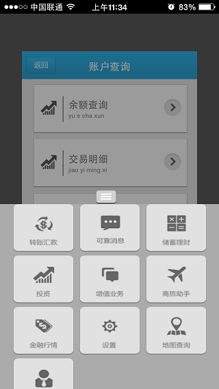
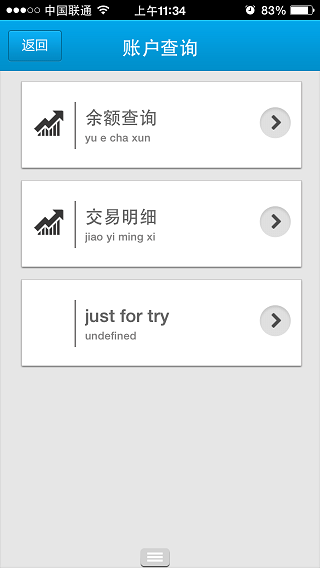
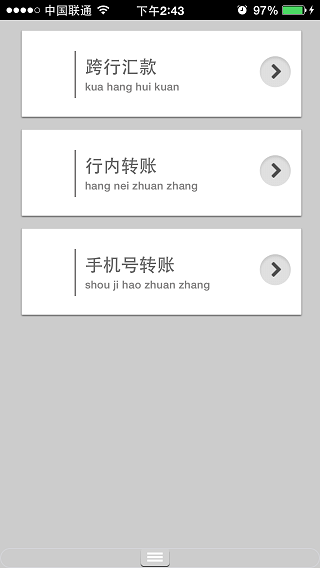
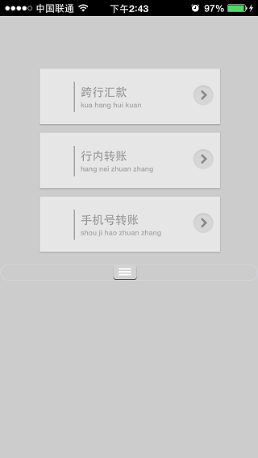
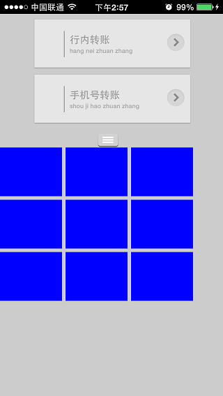

进入此界面，九宫格菜单隐藏在最下面，点击最下面按钮将九宫格菜单列表向上移动，再点击此按钮九宫格菜单列表向下移动到隐藏不见。
初始进入：
向上移动：

向下移动：

--[[
@doc:控制调用上升还是下降
--]]
function anima()
if anima_flag then
up();
else
down()
end;
end;
--[[
@doc:动画结束监听
--]]
local function stop_listener(sender)
if anima_flag then
anima_flag = false
else
div_h_ctrl[1]:setStyleByName("display","none");
anima_flag = true
end;
end;
--[[
@doc:上升动画
--]]
function up()
--调用lua接口控制二级菜单列表变小和透明度变化动作
transition:matrix(second_menu_ctrl[1],{m11=0.8,m22=0.8},2);
transition:alpha(second_menu_ctrl[1],0.5,2);
--显示九宫格菜单列表
div_h_ctrl[1]:setStyleByName("display","block");
--向上移动九宫格菜单列表
transition:setStopListener(div_h_ctrl[1],stop_listener);
transition:translateY(div_h_ctrl[1],-220,2);
end;
--[[
@doc:下降动画
--]]
function down()
--二级菜单列表恢复
transition:matrix(second_menu_ctrl[1],{m11=1,m22=1},2);
transition:alpha(second_menu_ctrl[1],1,2);
--向下移动九宫格菜单列表
transition:setStopListener(div_h_ctrl[1],stop_listener);
transition:translateY(div_h_ctrl[1],220,2);
end;
body节点报文：
<body name="body" class="body">
<!--频道列表div-->
<div name='second_menu' zindex="-1" class="body1" border="0" onclick="hideMenu()">
<table name="channel_table" class="channel_table" border="0">
<tr class="tr1">
<td>
<img src="local:vertical_line.png" class="img_channel2" />
<div class="channel_div" border="0" >
<label class="label_channel">跨行汇款</label><br/>
<label class="label_channel_py">kua hang hui kuan </label>
<img src="local:pull_but.png" class="img_onclick"/>
</div>
</td>
</tr>
<tr class="tr2"><td></td></tr>
<tr class="tr1">
<td>
<img src="local:vertical_line.png" class="img_channel2" />
<div class="channel_div" border="0" >
<label class="label_channel">行内转账</label><br/>
<label class="label_channel_py">hang nei zhuan zhang </label>
<img src="local:pull_but.png" class="img_onclick"/>
</div>
</td>
</tr>
<tr class="tr2"><td></td></tr>
<tr class="tr1">
<td>
<img src="local:vertical_line.png" class="img_channel2" />
<div class="channel_div" border="0" >
<label class="label_channel">手机号转账</label><br/>
<label class="label_channel_py">shou ji hao zhuan zhang </label>
<img src="local:pull_but.png" class="img_onclick"/>
</div>
</td>
</tr>
<tr class="tr2"><td></td></tr>
</table>
</div>
<div class="div_h" name="div_h">
<input type="button" class="button_zhankai" onclick="anima()"/>
<div class="menu_div_h" name="div_menu" border="0">
</div>
</div>
</body>
CSS样式报文：
.body{width:320px;height:460px;background-color: #CCCCCC;}
.body1{top:0px;left:0px;width:320px;height:440px;}
.channel_table{top:10px;left:20px;width:283px;}
.tr1{height:89px;width:283px;background-image:url(tr_channel.png);}
.tr2{height:10px;width:283px;}
.menu_div2{left:0px;top:51px;width:320px;}
.img_channel1{left:13px;top:26px;height:32px;width:32px;}
.img_channel2{left:54px;top:21px;height:47px;width:2px;}
.channel_div{left:65px;top:0px;height:89px;width:218px;}
.img_onclick{left:174px;top:26px;height:32px;width:32px;}
.label_channel{left:0px;top:26px;font-size:18px;color:#656565;}
.label_channel_py{left:0px;top:50px;font-size:11px;color:#868585;}
.button_zhankai{left:140px;top:0px;width:30px;height:20px;background-image:url(zhankai.png);display:block;}
.div_h{left:0px;top:440px;};
.menu_div_h{left:0px;top:20px;width:320px;display:none;background-color: #ABABAB;}
.menu_button{width:89px;height:70px;background-image: url(set.png)}
当前报文运行效果：
初始效果：

运行效果：

从运行效果可以看出虽然我们对九宫格菜单列表设置了display为block，但是菜单列表还是没有展现，这个时候能想起的解决方案就是调用location:reload()进行界面重新布局。如果进行了界面重新布局，整体界面的高度就为二级菜单div高度加上九宫格菜单div的高度，当把九宫格菜单列表动画移动上去后，界面高度大于屏幕高度，界面就会出现滑动的效果。

其实reload为界面重新布局，按道理，如果设置display为block就应该一定能显示出来，而且现在我们的九宫格菜单div也没有和任何其他的控件位置一样，不会出现控件重叠的问题，现在就是为什么看不到呢。
在仔细的检查一下发现，我们的div_menu样式中display为none，所以就算是setInnerHTML局部刷新了此div，九宫格同样为不显示也不占位，此时div_h的高度也就只有动画按钮的高度为20px，在做动画的时候将div_menu显示了，display只是对操作的控件起作用，所以div_menu的父控件div_h的高度不会变还是20px，导致九宫格菜单显示不出来。
我们改为在动画脚本中设置div_h的高度试试。
修改后的动画脚本为:
在function up中增加一行：
div_h_ctrl[1]:setStyleByName("height","340px");
在动画结束监听中增加一行：
div_h_ctrl[1]:setStyleByName("height","20px");
此时运行效果符合预期。
在使用display样式时请注意此时控件不占位，即使设置为block也只是显示而已，不会导致其他控件的位置有任何变化，必须得reload才会导致整体界面重新排版。